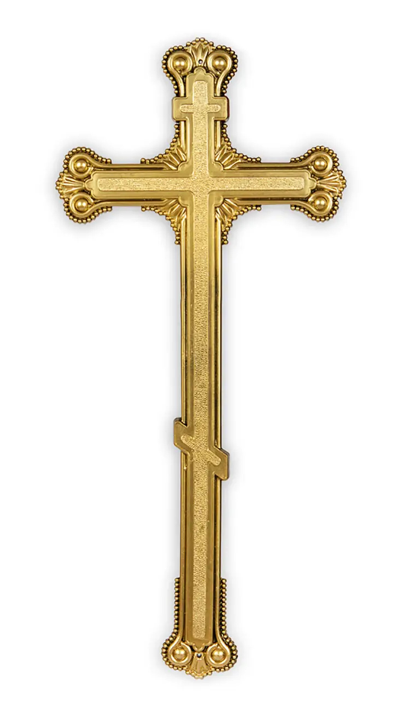
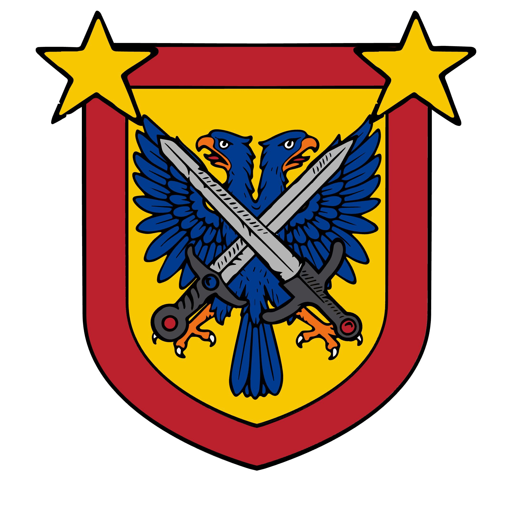

НАЗВА ДЕРЖАВИ: Республіка Бізантарська КОРОТКА НАЗВА: Бізантарія ФОРМА ПРАВЛІННЯ: Республіка ПОЛІТИЧНИЙ РЕЖИМ: Демократія СТОЛИЦЯ: Кармес-Тармілос НАЙБІЛЬШІ МІСТА: Міртанія, Фасторна, Іракнатор РЕГІОНИ / ОБЛАСТІ: 20 областей. КОНТИНЕНТ: Європа (частково Азія) ГЕОГРАФІЧНЕ ПОЛОЖЕННЯ: Південно-Східна Європа ЛОЩА: 1.025.529 КМ КВ ДЕРЖАВНА МОВА: Бермудська ІНШІ ПОШИРЕНІ МОВИ: Українська НАЦІОНАЛЬНІСТЬ (основна): Бермудці, жителі Консут Чілік РЕЛІГІЯ: Християнство
ДЕРЖАВНА ВЛАДА
ГЛАВА ДЕРЖАВИ: Президент Кацпер Мажировський ГЛАВА УРЯДУ: Прем’єр-Міністр Олександр Мельничук ЗАКОНОДАВЧИЙ ОРГАН: Антикор СУДОВА ВЛАДА: Віртуальна судова система КОНСТИТУЦІЯ: Є
ЕКОНОМІКА
ТИП ЕКОНОМІКИ: Змішана, Ринкова ВАЛЮТА: Аркан ОСНОВНІ ГАЛУЗІ: - Енергетика - Транспорт і логістика - і ще багато чого ЕКСПОРТ: Усе ІМПОРТ: Усе

АРМІЯ ТА БЕЗПЕКА
НАЗВА АРМІЇ: Збройні Сили Республіки Бізантарської (ЗСРБ) ТИП АРМІЇ: Контрактна + мобілізаційна СУХОПУТНІ ВІЙСЬКА: Є ПОВІТРЯНІ СИЛИ: Є ВІЙСЬКОВО-МОРСЬКІ СИЛИ: Є СИЛОВІ СТРУКТУРИ: Поліція і т.д.

ЗОВНІШНЯ ПОЛІТИКА
МІЖНАРОДНИЙ СТАТУС: Вірт. Країна визнана деякими СОЮЗИ / ПАРТНЕРСТВА: Багато країн, я не буду сюда писати, занесу в другу сторінку ЗОВНІШНІЙ КУРС: Прохзшний
КУЛЬТУРА ТА СУСПІЛЬСТВО
ТИП СУСПІЛЬСТВА: Громадянське, демократичне ОСВІТА: Безкоштовна базова та середня КУЛЬТУРА: Напишу тут...
СИМВОЛІКА
ПРАПОР: 3 жовтої смуги, 2 чорної смуги, зліва трикутник червоний, в трикутнику 4 зірки, 1 велика а 3 навколо великої ГЕРБ: Тяжко пояснити:( ГІМН: У ТГк
КУЛЬТУРА РЕСПУБЛІКИ БІЗАНТАРСЬКОЇ
Культура та дух Бізантарії Республіка Бізантарська — демократична республіка, побудована на верховенстві права, громадянській участі та відповідальності держави перед народом. Головна ідея суспільства: «Влада служить громадянам».
Народ Бізантарії цінує: • свободу слова і вибору, • законність і прозорість влади, • чесну працю, • громадянську відповідальність.
Міста країни поєднують функціональну сучасну архітектуру та стриманий модернізм: адміністративні будівлі, громадські простори, відкриті площі, парки, університети. Особлива увага приділяється доступності середовища та розвитку місцевих громад.
Освіта спрямована на формування свідомих громадян і кваліфікованих фахівців. У школах і вишах навчають критичному мисленню, основам демократії, економіки та права. Викладачів поважають як носіїв знань і демократичних цінностей.
Громадські традиції пов’язані з виборами, громадськими слуханнями, днями Конституції та місцевого самоврядування. Участь у суспільному житті вважається важливою частиною культури.
Кухня Бізантарії — традиційна й різноманітна: м’ясні та рослинні страви, хліб, крупи, овочі, національні супи. Їжа є частиною сімейних і громадських зустрічей.
Мистецтво відкрите й плюралістичне: незалежне кіно, документалістика, пісні про свободу і щоденне життя, сучасна література та пам’ятники історичним подіям і діячам демократії.